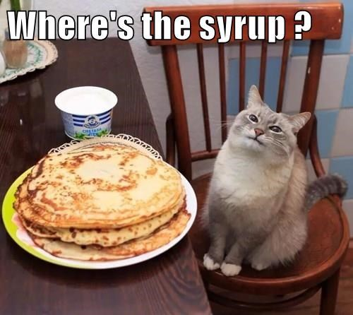
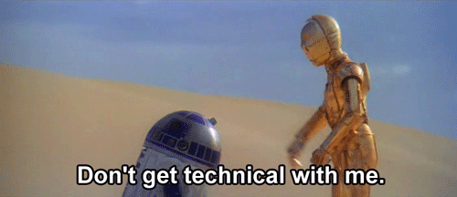

Let me begin by sharing a story I wrote for my Sprint-2 reflection, this is my take on the relationship between html & CSS,
There were these two cuzzies, Henry and Chief. Henry was a very structured and logical person while his cuzzy Chief was a pretty creative and haututu fulla. They spent heaps of time together and enjoyed building cool things. One weekend Henry went to stay over at Chiefs place. They wanted to hire a game to play on Chiefs N64, so off they went to Video Ezy. Henry was searching the shelves and spotted this game called Tetris, he checked the back of the cover and immediately liked how the blocks fit together to build structures. 'Chief look at this!' Chief was like 'wooooah! cool cuz, I like the colours and shapes heaps!' he told Henry.
While they were playing the game, Henry really enjoyed making basic shapes and patterns similar to the structure of html which uses simple tags to create the structure of a web page. Chief was more interested in the game's colours and style. He really liked how the blocks could make cool colours and be changed to make cool patterns like CSS which adds, colour, font and style to html pages to look cool Henry and Chief continued playing Tetris making heaps of cool, colourful patterns, remembering all the cool things they were able to create. Just like Web Development, html and CSS need to work together like Henry and Chief, to create awesome, eye-catching web pages.
By reading this story I want to talk about the new relationship with their other cuzzy.
IntroJavaScriptor Jimmy. Who is Jimmy? Jimmy is the cousin with all the flash gears, who always tends to look down at his cousins. Jimmy is the one who always has to have his way. He often tells cuzzy Henry that his clothes look old and tatty, that he should be wearing things like Jimmy does and to get rid of his old looking clothes because Jimmy’s clothes look better. Jimmy always eavesdrops on Henry and Chiefs convos, usually always complaining because he wants to change Chiefs ideas, How rude, Right! But Chief knows better than Jimmy most times. Jimmy is too cool for Video Ezy, he’d rather just download stuff off the internet because he’s too impatient and doesn’t want to wait for Henry to decide. Jimmy would rather change things without asking his cousins.
Just like Jimmy, Java Script can interact with html components directly. JS can access and manipulate the content, attributes, and properties of HTML elements. JavaScript is commonly used to handle user interactions and respond to events that occur within the HTML elements. It can listen for various events, such as clicks, mouse movement, key pressing, form submissions, and more. JS can access and update CSS properties and classes to change the appearance and behavior of elements but we must remember that CSS is responsible for styling and presentation. JavaScript can also receive data from a server and update the HTML structure or apply the received data to specific HTML elements. This enables real-time updates, data-driven web applications, and more.
Control Flow & Loops
I will try my best to explain Control Flow & Loops by relating them to everyday life activities

Walking the dog
Control Flow: Imagine you have to make a decision before taking the dog for a walk. If it's raining, then maybe you decide to take an umbrella otherwise you can go without one. This represents an if-else statement, where the condition(rain) determines the flow of control,
Loop: Now imagine while walking your dog you decide to walk around the block a few times. This represents a loop, where you repeat this same action(walking) until a certain condition(getting home) is met.

Cooking breakfast
Control Flow: Think of a time when you were cooking breakfast and you have a few options. If you have cornflakes you pour milk over it, if you have pancakes you pour maple syrup over them. This represents a switch statement, where different actions are taken based on the value of a variable(breakfast options),
Loop: While cooking your pancakes, you flip them until they are golden brown on both sides. This represents a loop as well until the specific condition where the pancakes are cooked.

Shopping
Control Flow: How about when you go shopping, you check your list and mark of the items as you find them. This represents a while loop, where you continue looking for your items until you have found everything on your list,
Loop: As you are shopping, you might encounter a buy-one-get-one-free special. In this case, you would loop back to the aisle and grab another item. This represents a do-while loop, where you repeat a certain action at least once and then continue based on a condition.

Doing the washing
Control Flow: When sorting your washing, you may separate your clothes into different piles depending on the colour or type of clothes. This represents a series of if statements, where each condition(colour, type) depends on which pile the clothing goes into,
Loop: Once you start the washing machine, it continues washing the clothes until the set time or until a specific condition is met. This represents a loop.
Hopefully these examples show how control flow and loops can be represented by life activities.
What is the DOM

DOM or Document Object Model is a programming interface for web documents. It represents the page so that programs can change the document structure, style and content.
A web page is a document that can be either displayed on the browser window or as an HTML source. In both cases, it is the same document but the Document Object Model representation allows it to be manipulated.
What is the difference between accessing data from arrays and objects

In simple terms
Arraysare like numbered lists where each element has a specific position. You access data from an array by specifying the element's positions, starting from 0,
In the array example above, we access the data by using the index within the square brackets. We can get the first elemen by accessing 'numbers[0]' and the second element by 'numbers[1]'
Objectsare like labeled containers where each data item has a unique name. You access data from an object by specifying the name or label associated with the data item,
In the object example, we can access data by using the property names. We can get the value associated with the 'name' property by accessing 'person.name', the 'age' by 'person.age' and the 'city' by the property 'person['city']'
What are functions and why are they helpful?
Functions are helpful as they make your program organized and make it easier to do things repeatedly. Instead of writing the same instructions over an over again, you can put those instructions inside a function and use it whenever you need it.
In this code example we have two functions: 'walk()' and 'talk()'. When we call 'walk()' C3PO will walk forward and the message 'C3PO is walking forward" is printed. When we call 'talk()', C3PO says "Don't get technical with me!" is printed.
Functions allow us to give instructions to C3PO once and we can use them as many times as we want. It makes our program easier to read and understand. Just like giving a specific command to C3PO, we can tell the computer what to do by calling a function.